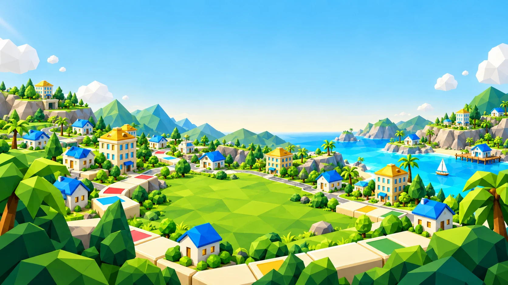

Multiplayer online · 2 a 4 jogadores
Chame a turma.
A rivalidade é por sua conta.
Crie uma sala, compartilhe o código e reúna seus amigos. Cada jogador entra pelo próprio navegador.
Jogar com amigos
Seu império começa com uma jogada.
Grátis no navegador. Com amigos ou contra o BOT.

 Explore o tabuleiro
Explore o tabuleiro
Bem-vindo ao seu próximo tabuleiro
Compre estados, construa seu império e faça cada visita render.
Um jogo de tabuleiro online com a cara do Brasil.
A sorte abre o caminho.
A sua estratégia faz o resto.
Do primeiro terreno à vitória
Role os dados e explore o tabuleiro. Estados, praias e cartas de Sorte ou Azar esperam por você.
Invista em propriedades, evolua de casas a hotéis e receba aluguel dos seus adversários.
Complete os conjuntos de propriedades exigidos ou termine a partida com o maior patrimônio imobiliário.
Oito personagens. A sua personalidade.
Escolha seu personagem e a cor da sua roupa.
A mesma cor acompanha suas construções no tabuleiro.


01 / 08Pedro Álvares Cabral
Antes de começar
Conheça as regras da sua próxima partida.
CAPITALIST é um jogo de tabuleiro online grátis de estratégia e gestão de imóveis. Você percorre um tabuleiro com estados e praias, compra propriedades, constrói casas e hotéis e disputa aluguéis e patrimônio com outros jogadores.
Se você gosta de jogos como Monopoly e Banco Imobiliário, vai reconhecer a diversão de rolar dados, comprar terrenos e receber aluguéis. CAPITALIST é um jogo independente, com identidade, tabuleiro brasileiro, personagens e regras próprios, incluindo festivais, Copa do Mundo e objetivos de conquista. Não é uma versão oficial desses jogos.
Clique em Jogar grátis, escolha Criar sala e compartilhe o código. Seus amigos entram pelo mesmo site usando Entrar com código. O multiplayer aceita de 2 a 4 jogadores e o anfitrião inicia a partida quando todos estiverem prontos.
Sim, o CAPITALIST é grátis. O jogo funciona diretamente no navegador, sem download obrigatório e sem cadastro. Para o multiplayer, todos precisam de uma conexão com a internet.
Sim. Escolha Jogar com BOT no menu, selecione seu personagem e sua cor e entre no tabuleiro. O BOT rola os dados, compra, constrói e toma decisões automaticamente.
A duração padrão é de 30 minutos. Nas salas online, o anfitrião pode escolher de 30 a 99 minutos. A partida também pode terminar antes por falência dos adversários ou pela conquista dos objetivos de propriedades.
Sim. A apresentação pode ser vista em qualquer orientação. Para jogar no celular ou tablet, use o aparelho na horizontal e siga o pedido de tela cheia do jogo. Você também pode jogar no computador pelo navegador.
Você pode vencer sendo o último jogador solvente, mantendo os conjuntos exigidos de monopólios ou as quatro praias durante uma rodada dos adversários, ou tendo o maior patrimônio imobiliário ao acabar o tempo. O caixa desempata o resultado por patrimônio.
O tabuleiro está esperando
Grátis. Online. Com a sua cara.